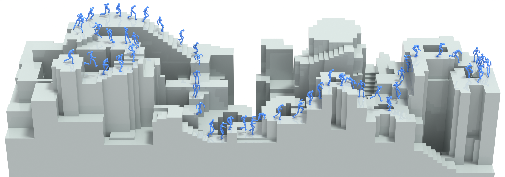

PARC: Physics-based Augmentation with Reinforcement Learning for Character Controllers
SIGGRAPH 2025

Abstract
Humans excel in navigating diverse, complex environments with agile motor skills, exemplified by parkour practitioners performing dynamic maneuvers, such as climbing up walls and jumping across gaps. Reproducing these agile movements with simulated characters remains challenging, in part due to the scarcity of motion capture data for agile terrain traversal behaviors and the high cost of acquiring such data. In this work, we introduce PARC (Physics-based Augmentation with Reinforcement Learning for Character Controllers), a framework that leverages machine learning and physics- based simulation to iteratively augment motion datasets and expand the capabilities of terrain traversal controllers. PARC begins by training a motion generator on a small dataset consisting of core terrain traversal skills. The motion generator is then used to produce synthetic data for traversing new terrains. However, these generated motions often exhibit artifacts, such as incorrect contacts or discontinuities. To correct these artifacts, we train a physics-based tracking controller to imitate the motions in simulation. The corrected motions are then added to the dataset, which is used to continue training the motion generator in the next iteration. PARC’s iterative process jointly expands the capabilities of the motion generator and tracker, creat- ing agile and versatile models for interacting with complex environments. PARC provides an effective approach to develop controllers for agile terrain traversal, which bridges the gap between the scarcity of motion data and the need for versatile character controllers.Paper: [PDF] Code: [GitHub / IsaacGym] Preprint: [arXiv]
Videos
Bibtex
@article{
2021-TOG-AMP,
author = {Peng, Xue Bin and Ma, Ze and Abbeel, Pieter and Levine, Sergey and Kanazawa, Angjoo},
title = {AMP: Adversarial Motion Priors for Stylized Physics-Based Character Control},
journal = {ACM Trans. Graph.},
issue_date = {August 2021},
volume = {40},
number = {4},
month = jul,
year = {2021},
articleno = {1},
numpages = {15},
url = {http://doi.acm.org/10.1145/3450626.3459670},
doi = {10.1145/3450626.3459670},
publisher = {ACM},
address = {New York, NY, USA},
keywords = {motion control, physics-based character animation, reinforcement learning},
}